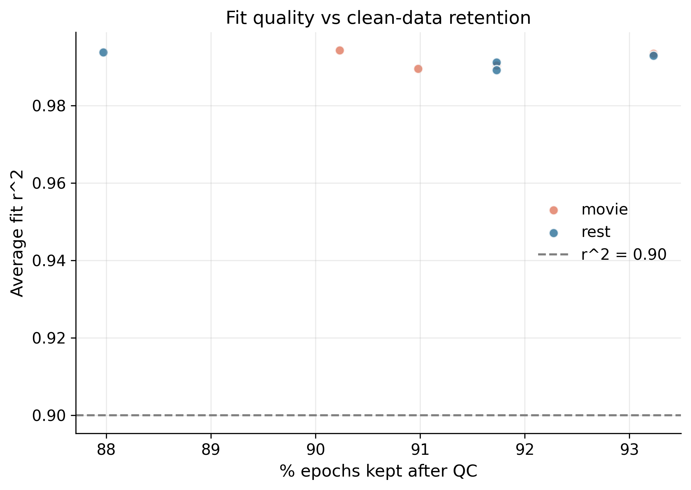
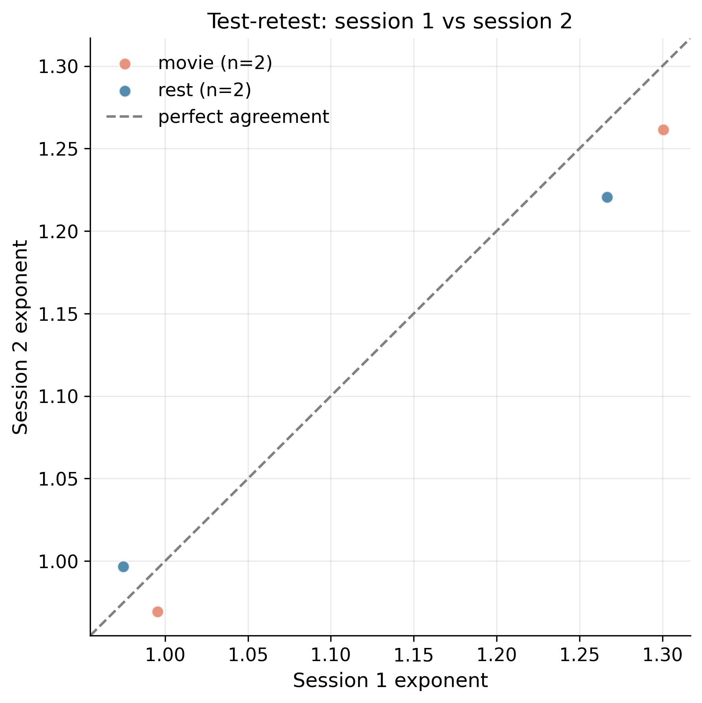
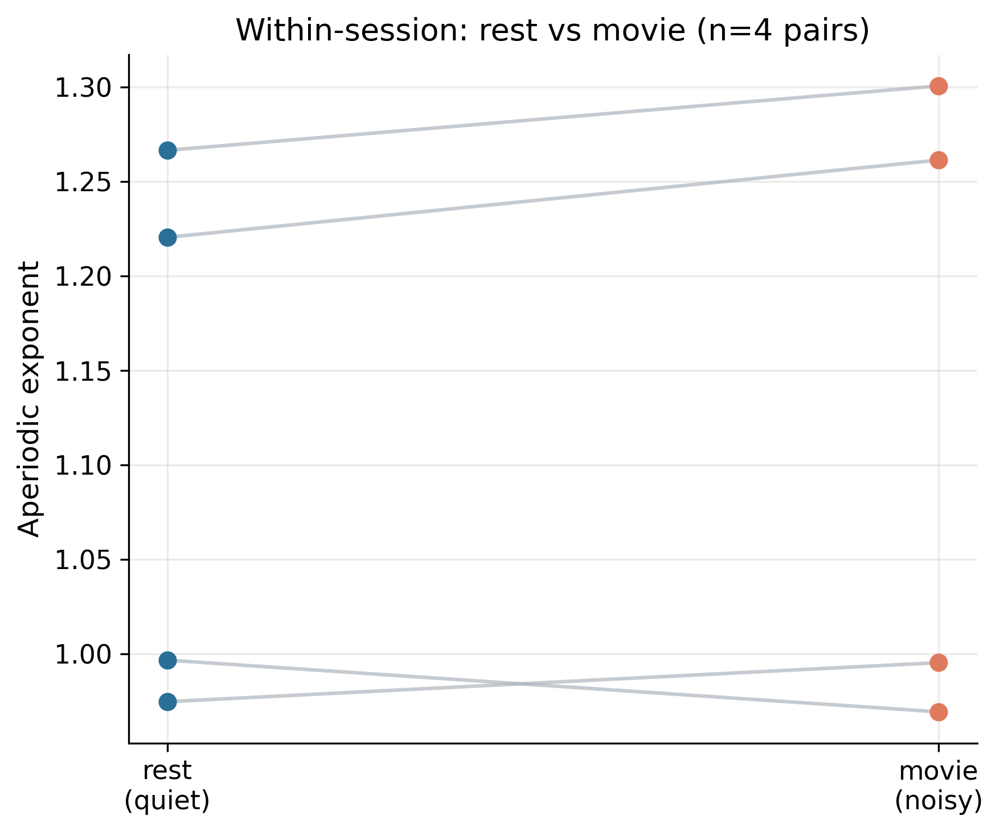
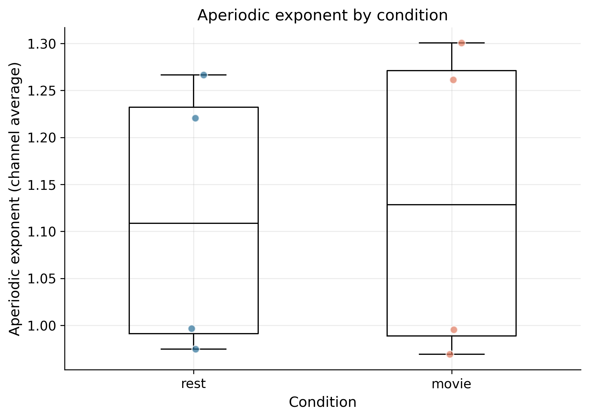
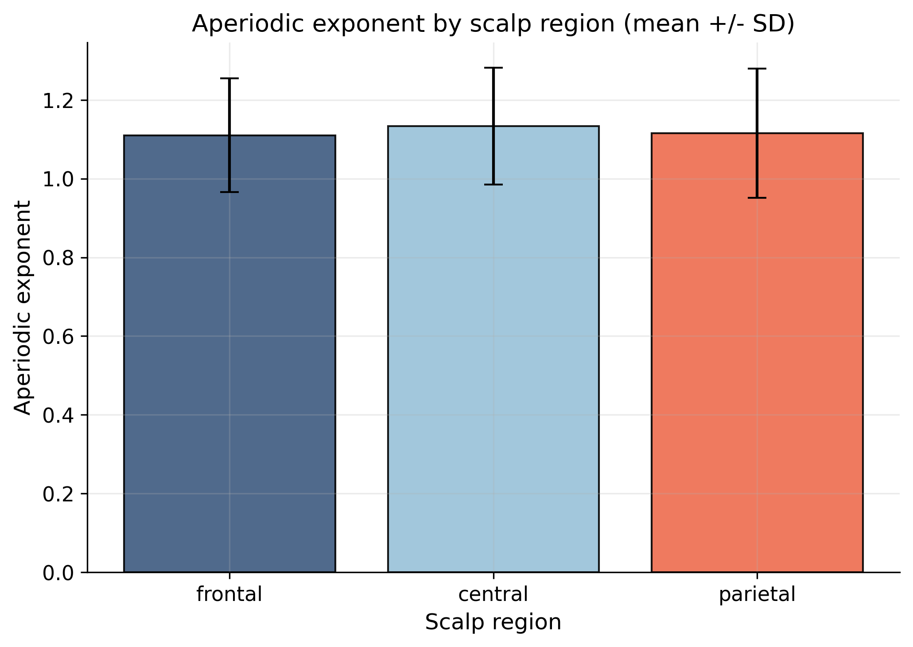
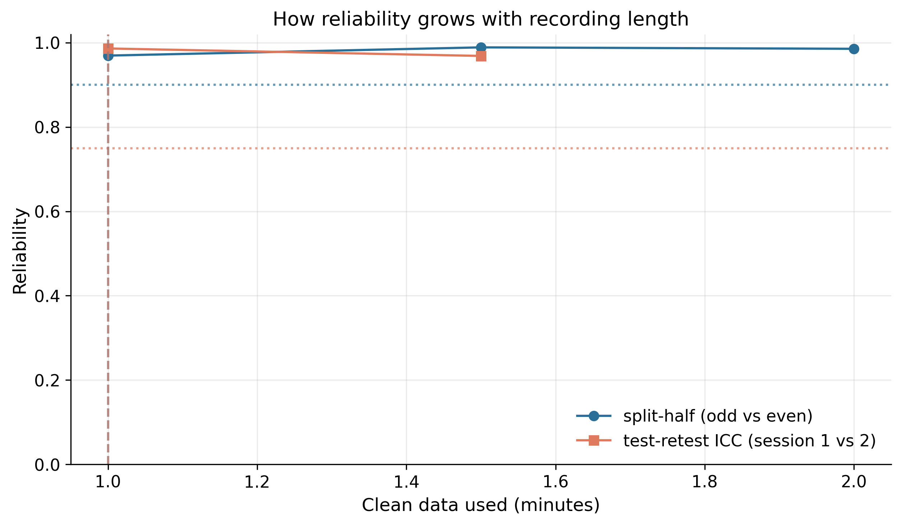
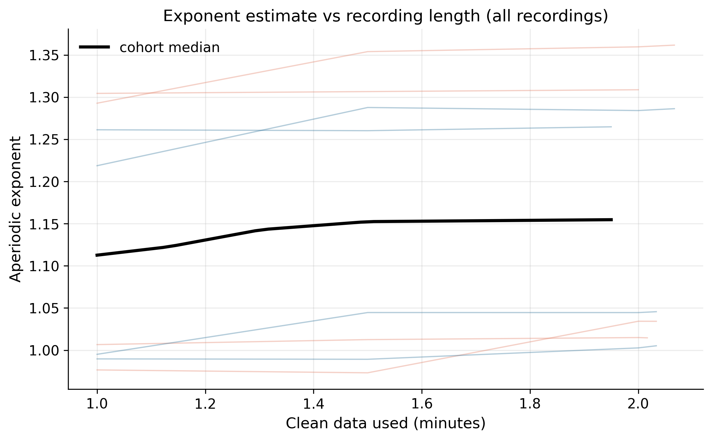

Recordings processed: 8. This report answers the study's core questions: can the Xon headset recover the aperiodic exponent accurately, is it reliable across a person's repeat sessions, does it survive a noisy condition, and how few minutes of clean data are needed.
Distribution of the exponent, fit r², and how much clean data survived QC, overall and by condition.
| group | metric | n | mean | sd | median | iqr | min | max |
|---|---|---|---|---|---|---|---|---|
| all | aperiodic exponent | 8 | 1.1232 | 0.1505 | 1.1087 | 0.2724 | 0.9694 | 1.3006 |
| all | fit r^2 | 8 | 0.9918 | 0.0020 | 0.9920 | 0.0033 | 0.9891 | 0.9943 |
| all | % epochs kept | 8 | 91.3537 | 1.7037 | 91.7300 | 1.3125 | 87.9700 | 93.2300 |
| all | clean minutes | 8 | 2.0250 | 0.0378 | 2.0333 | 0.0291 | 1.9500 | 2.0667 |
| all | across-channel SD | 8 | 0.0325 | 0.0124 | 0.0322 | 0.0164 | 0.0147 | 0.0499 |
| movie | aperiodic exponent | 4 | 1.1317 | 0.1735 | 1.1284 | 0.2823 | 0.9694 | 1.3006 |
| movie | fit r^2 | 4 | 0.9919 | 0.0023 | 0.9918 | 0.0035 | 0.9895 | 0.9943 |
| movie | % epochs kept | 4 | 91.5425 | 1.2809 | 91.3550 | 1.3125 | 90.2300 | 93.2300 |
| movie | clean minutes | 4 | 2.0292 | 0.0285 | 2.0250 | 0.0291 | 2.0000 | 2.0667 |
| movie | across-channel SD | 4 | 0.0387 | 0.0130 | 0.0411 | 0.0182 | 0.0228 | 0.0499 |
| rest | aperiodic exponent | 4 | 1.1147 | 0.1503 | 1.1087 | 0.2408 | 0.9748 | 1.2666 |
| rest | fit r^2 | 4 | 0.9917 | 0.0020 | 0.9920 | 0.0024 | 0.9891 | 0.9937 |
| rest | % epochs kept | 4 | 91.1650 | 2.2443 | 91.7300 | 1.3150 | 87.9700 | 93.2300 |
| rest | clean minutes | 4 | 2.0208 | 0.0498 | 2.0333 | 0.0292 | 1.9500 | 2.0667 |
| rest | across-channel SD | 4 | 0.0263 | 0.0094 | 0.0270 | 0.0112 | 0.0147 | 0.0363 |

ICC(2,1) is the standard test-retest statistic (>0.75 good, >0.9 excellent).
| condition | n_participants_complete | n_sessions | ICC(2,1) | mean_abs_session_diff | note |
|---|---|---|---|---|---|
| movie | 2 | 2 | 0.9877 | 0.0326 | excellent reliability |
| rest | 2 | 2 | 0.9804 | 0.0340 | excellent reliability |

Does the exponent hold up when the participant is watching a movie (more movement/noise) versus resting? A paired contrast within each participant-session.
| quiet | rest |
| noisy | movie |
| n_pairs | 4 |
| quiet_mean | 1.1147 |
| noisy_mean | 1.1317 |
| mean_diff_noisy_minus_quiet | 0.0171 |
| cohen_dz | 0.5541 |
| paired_t | 1.1083 |
| paired_t_p | 0.3486 |
| wilcoxon_p | 0.375 |


| region | n | mean | sd | median | iqr | min | max |
|---|---|---|---|---|---|---|---|
| frontal | 8 | 1.1101 | 0.1443 | 1.1062 | 0.2563 | 0.9628 | 1.2811 |
| central | 8 | 1.1334 | 0.1489 | 1.1227 | 0.2512 | 0.9721 | 1.3297 |
| parietal | 8 | 1.1156 | 0.1644 | 1.1015 | 0.2636 | 0.9108 | 1.3241 |
| test | Friedman |
| regions | ['frontal', 'central', 'parietal'] |
| n_recordings | 8 |
| statistic | 4.75 |
| p_value | 0.093 |

We estimate the exponent using increasing amounts of clean data and ask how reliable it becomes. Two standard measures: split-half internal consistency (odd vs even epochs, Spearman-Brown corrected; target ≥ 0.9) and between-session test-retest ICC (session 1 vs session 2; target ≥ 0.75 = "good"). The shortest recording length that reaches each target is the evidence-based answer to how few minutes are needed.
| split_half_target | 0.9 |
| icc_target | 0.75 |
| minutes_for_split_half | 1.0 |
| minutes_for_good_icc | 1.0 |
| max_split_half | 0.989 |
| max_icc | 0.9864 |
| n_recordings | 8 |


Method grounded in the aperiodic-reliability literature (McKeown et al. 2024, Cerebral Cortex; epoch-increment split-half reliability as in EEG power-spectrum reliability work). The full curve is in stats_reliability_by_duration.csv.
See gallery.html for a one-page contact sheet of every recording's diagnostic figure. Granular per-recording outputs are in per_recording/, figures in figures/, statistics in statistics/.
Spectral parameterization (aperiodic exponent & offset) via the FOOOF/specparam method:
Donoghue et al. 2020, Parameterizing neural power spectra into periodic and
aperiodic components, Nature Neuroscience 23:1655–1665.
Acquisition & artifact-rejection parameters (0.1 Hz high-pass, 1 s / 100 ms
epochs, amplitude >100 µV or gradient >10 µV/ms rejection, ear/A2
reference) follow the Xon validation work of the Boere & Krigolson lab
(Boere et al. 2025, Sci Rep; Boere, Copithorne & Krigolson 2025, Exp Brain Res);
the gradient criterion reproduces Krigolson's published artifact-rejection routine.
Reliability-vs-recording-length analysis (split-half internal consistency; between-session
test–retest ICC) follows McKeown et al. 2024, Test–retest reliability of
spectral parameterization by 1/f characterization using SpecParam, Cerebral Cortex
34:bhad482, and the epoch-increment reliability approach used in EEG power-spectrum
reliability studies. EMG contamination of high-frequency EEG: Whitham et al. 2007;
Muthukumaraswamy 2013. Preprocessing implemented with MNE-Python
(Gramfort et al. 2013). Full details in docs/METHODS.md.